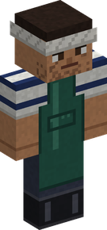
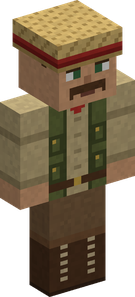
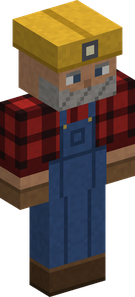
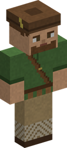

Merchants and contracts¶
Five travelling merchants visit the Overworld, each buying the goods of one trade. Talk to one and his screen offers Buy (his shop) and Sell (his sale window); each also brings a stall of his trade's goods and three contracts. Anyone can trade with them; a Merchant gets better prices and more.
| Where | the Overworld: villages, and the wild under the open sky |
| How often | each merchant gets a try every 5 minutes (by default) |
| Currency | Belly |
The merchants are civilians: no mob harms them (Marines, pirates and bandits included), nor do stray arrows or creeper blasts. Only players, falls, lava and drowning can hurt them. A merchant leaves once no player is within 200 blocks.
The five merchants¶
| Merchant | Holds | Buys | Always sells | Stall |
|---|---|---|---|---|
| Fishmonger | a Forked-Tail Killifish | fish; Sea King Scales, Fins and Head Crests; Mine Mine no Mi's Sea King Meat | 3-4 of: String 5-10, Fishing Rod 100-150, Bucket 60-90, Bucket of Cod 80-120, Bucket of Salmon 90-130 | fish |
| Hunting Merchant | a Bug Catcher Net | caught creatures (not their saps, nectars and so on) | Bug Catcher Net 60-100, String 5-10 | creatures |
| Travelling Cook | a Sandwich | every cooked dish | Bread 15-25 | the basic dishes (Cook recipes up to level 15) |
| Prospector | an iron pickaxe | what a mine gives (see below); never emeralds, ancient debris or ingots | Torches, 8 for 8-15 | the same minerals |
| Materials Trader | a jar of Sweet Sap | Farmer crops and fruits, rare harvests, what a capture leaves behind (see below); no vanilla goods | Flour 6-10 | the same materials |
All prices on this page are in Belly.




When and where they come¶
- Every 5 minutes (by default), each of the five merchants gets one try. For each, a random player in the Overworld is picked.
- If that player is in a village, the merchant comes 35 % of the time; if the player is in the wild under the open sky (at or above the highest solid block of their column, leaves aside), 15 % of the time. A player underground or in a cave gets nobody.
- A village gets at most one of each kind (none while another of the same kind is within 64 blocks). The wild gets one merchant at a time (none while any Cruise merchant is within 64 blocks).
- He appears on solid ground, 12-31 blocks from the player (on each axis) in a village, 16-32 blocks away in the wild.
In the merchants section, a server can change how often they try (tryEveryTicks) and, for each merchant, whether he comes to villages and to the wild, and how likely (inVillages, villageChance, inTheWild, wildChance). See Configuration.
His purse¶
Each merchant arrives with a purse of 5 000 to 100 000 Belly (the Travelling Cook 20 000 to 250 000). He does not buy what he cannot pay for. The purse refills all at once at the start of the next in-game day (sleeping through the night counts), not bit by bit. From Merchant level 40 his purse no longer limits what he buys from you.
Selling¶
Open the Sell window. Its nine slots take only what he buys, and the window shows his offer and what is left in his purse; press Sell. You have to stay within 8 blocks of him. Whatever he does not buy goes back to your inventory when you close the window.
Items are priced one by one: the deal stops at the first one that his purse, or your Belly cap, cannot cover.
The market fills up¶
Every item of one kind you sell lowers the price of the next one of that kind: after 16 sold it fetches half, after 48 a quarter. This is counted on you, not on the merchant, so neither finding another merchant nor dying resets it. It fades by half every in-game day.
A Merchant of level 10 fills the market half as fast (32 sold before the price halves), and a Merchant's price bonus (+0.5 % per level, up to +25 % at level 50) applies on top.
The stall¶
Besides his fixed goods, each merchant brings a stall of his trade's goods, drawn once when he arrives:
- the commonest good is there 85 % of the time, the rarest 4 %, the rest in between;
- a common good comes several at once (up to 8), a rare one alone;
- stall prices are 3 times what he would pay, give or take 10 %;
- the stall does not restock.
Something bought from a stall is a plain item: a fish has no size (it sells back at the average price), a dish has no quality.
Every merchant may also bring torn treasure maps: a Torn Rumor Map 35 % of the time (600), a Torn Old Map 12 % (3 000), a Torn Legendary Map 3 % (15 000). See Treasure hunts.
A Merchant of level 25 pays 15 % less for everything they buy from a Cruise merchant (the Buy screen still shows the full price, but they are charged less).
What they pay¶
These are the prices for one item, before the market fills up and before a Merchant's bonus. "On stall" is how often the good is on his stall.
Fishmonger¶
A fish's price depends on its size: the table gives the price of a fish of average size; the smallest of its kind fetches ×0.75, the biggest ×1.5. See the Fisher.
| Fish | Pays (average) | Smallest | Biggest | Stall price | On stall |
|---|---|---|---|---|---|
| Forked-Tail Killifish | 30 | 23 | 45 | 81-99 | 85 % |
| Striped Clam | 30 | 23 | 45 | 81-99 | 85 % |
| Fist Crayfish | 44 | 33 | 66 | 119-145 | 62 % |
| Cutie Piranha | 53 | 40 | 80 | 143-175 | 55 % |
| Glistening Saury | 59 | 44 | 89 | 159-195 | 52 % |
| Scissor Shrimp | 66 | 50 | 99 | 178-218 | 48 % |
| Autumn Leaves Salmon | 73 | 55 | 110 | 197-241 | 46 % |
| Butterflyfish | 82 | 62 | 123 | 221-271 | 43 % |
| Pumpkin Octopus | 103 | 77 | 155 | 278-340 | 38 % |
| Adventure Fish | 132 | 99 | 198 | 356-436 | 33 % |
| Treasure Pargai | 169 | 127 | 254 | 456-558 | 29 % |
| Bone Fish | 219 | 164 | 329 | 591-723 | 26 % |
| Smiley Jellyfish | 219 | 164 | 329 | 591-723 | 26 % |
| Balloon Catfish | 286 | 215 | 429 | 772-944 | 23 % |
| Lantern Trilobite | 286 | 215 | 429 | 772-944 | 23 % |
| Guidance Monkfish | 375 | 281 | 563 | 1 013-1 238 | 20 % |
| Caltrop Starfish | 431 | 323 | 647 | 1 164-1 422 | 19 % |
| Lovely Angel | 495 | 371 | 743 | 1 337-1 634 | 18 % |
| Icefish | 570 | 428 | 855 | 1 539-1 881 | 17 % |
| Ice Sunfish | 657 | 493 | 986 | 1 774-2 168 | 16 % |
| Shark | 877 | 658 | 1 316 | 2 368-2 894 | 14 % |
| Missile Manta Ray | 1 176 | 882 | 1 764 | 3 175-3 881 | 12 % |
| Hydramandrake | 1 585 | 1 189 | 2 378 | 4 280-5 231 | 11 % |
| Salamandrake | 2 145 | 1 609 | 3 218 | 5 792-7 079 | 10 % |
| Sky Fish | 2 916 | 2 187 | 4 374 | 7 873-9 623 | 8 % |
| Lava Flounder | 3 982 | 2 987 | 5 973 | 10 751-13 141 | 7 % |
| Great Terigius | 5 458 | 4 094 | 8 187 | 14 737-18 011 | 7 % |
| Giant Sky Fish | 7 510 | 5 633 | 11 265 | 20 277-24 783 | 6 % |
| Skull Knight | 8 822 | 6 617 | 13 233 | 23 819-29 113 | 5 % |
| Beat Alligator | 10 372 | 7 779 | 15 558 | 28 004-34 228 | 5 % |
| Burning Dragon | 12 207 | 9 155 | 18 311 | 32 959-40 283 | 5 % |
| Aurora Sunfish | 16 950 | 12 713 | 25 425 | 45 765-55 935 | 4 % |
| Golden Whale | 20 000 | 15 000 | 30 000 | 54 000-66 000 | 4 % |
He also buys the Sea King parts at fixed prices (never on his stall): Sea King Scale 1 500, Sea King Fin 4 000, Sea King Head Crest 15 000, and Mine Mine no Mi's Sea King Meat 1 000.
Hunting Merchant¶
| Creature | Pays | Stall price | On stall |
|---|---|---|---|
| Hercules Beetle, Mole, Seagull, Swallowtail Butterfly, Tempest Mouse, Doctor Hornet | 40 | 108-132 | 85 % |
| Tree Frog | 63 | 170-208 | 57 % |
| Clawed Scorpion, Rock Lizard, Umbrella Frog | 80 | 216-264 | 49 % |
| Jungle Lizard, Lantern Firefly | 103 | 278-340 | 42 % |
| Oil Stain Frog, Red-Eyed Spotted Frog | 135 | 365-446 | 36 % |
| Hidden Forest Bee, Horned Icicle Lizard, Lightbulb Firefly | 179 | 483-591 | 31 % |
| Fire Hercules, Golden Hercules, Invisible Swallowtail | 208 | 562-686 | 28 % |
| Atlas Beetle, Ice Miyama Stag Beetle, Purple Poison Frog | 241 | 651-795 | 26 % |
| Crossbone Butterfly, Doze Evil Eye Butterfly | 326 | 880-1 076 | 22 % |
| Flying Penguin, Giant Devil Hand Moth | 446 | 1 204-1 472 | 19 % |
| A Class Toad, Thunder Spider | 616 | 1 663-2 033 | 16 % |
| Antlion Lacewing | 856 | 2 311-2 825 | 14 % |
| Lightning Beetle | 1 012 | 2 732-3 340 | 13 % |
| Spirit Firefly | 2 396 | 6 469-7 907 | 9 % |
| Rainbow Phoenix | 15 000 | 40 500-49 500 | 4 % |
A creature bought and released gives no Hunter XP or capture loot when caught again. See the Hunter.
Prospector¶
| Good | Pays | Stall price | On stall |
|---|---|---|---|
| Coal, Raw Copper, Nether Quartz | 5 | 14-17 | 85 % |
| Diamond Fragment, Kairoseki, Raw Iron, Redstone Dust | 7 | 19-23 | 65 % |
| Explosive Rock Fragment, Raw Gold, Lapis Lazuli, Marble | 11 | 30-36 | 50 % |
| Iron Scrap, Pure Iron Ore | 19 | 51-63 | 38 % |
| Dial Fragment | 33 | 89-109 | 29 % |
| Diamond | 61 | 165-201 | 23 % |
| Dense Kairoseki | 28 (held to the price of the four Kairoseki that craft one) | 76-92 | 8 % |
| Mysterious Parts | 226 | 610-746 | 13 % |
| Netherite Scrap | 6 000 | 16 200-19 800 | 4 % |
Materials Trader¶
| Good | Pays | Stall price | On stall | Where it comes from |
|---|---|---|---|---|
| Bitter Grass, Red Fruit, Blue Fruit | 3 | 8-10 | 85 % | crops and fruit (Farmer level 1) |
| Medicinal Herb, Brown Fruit, Horrific Pear | 4 | 11-13 | 62 % | crops and fruit |
| Ancient Rice | 5 | 14-17 | 50 % | crop |
| Coconut | 7 | 19-23 | 41 % | palm fruit |
| Mystery Egg, Sweet Sap, Nectar | 10 | 27-33 | 30 % | capture of a Seagull, a Hercules Beetle, a Doctor Hornet (in that order) |
| Rubber Fruit | 12 | 32-40 | 27 % | fruit |
| Cactus Pulp | 14 | 38-46 | 24 % | crop |
| Lotus Seed | 23 | 62-76 | 17 % | crop |
| Mystery Mushroom | 38 | 103-125 | 13 % | crop |
| Cactus Flower | 47 | 127-155 | 11 % | rare harvest of Cactus Pulp |
| Flame Powder | 52 | 140-172 | 10 % | capture of a Fire Hercules |
| Wilted Carrot | 54 | 146-178 | 10 % | crop |
| Ice Powder | 121 | 327-399 | 7 % | capture of an Ice Miyama Stag Beetle |
| Sleep Honey | 128 | 346-422 | 6 % | capture of a Hidden Forest Bee |
| Golden Egg | 200 | 540-660 | 5 % | capture of a Seagull (1 in 20) |
| Thunder Powder | 253 | 683-835 | 4 % | capture of a Lightning Beetle |
| Golden Fruit | 300 | 810-990 | 4 % | fruit (Farmer level 30) |
| Golden Matsutake | 380 | 1 026-1 254 | 4 % | rare harvest of Mystery Mushrooms |
Travelling Cook¶
A dish is worth the higher of two prices: its place on the Cook's scale (from 200 for the first dishes up to 60 000 for the last), or two and a half times what its ingredients fetch raw from the other merchants. A Fine dish pays ×1.25, a Superb one ×1.5. His stall only carries the basic dishes (Cook level 15 and below), always of normal quality. See the Cook.
| Dish (Cook level) | Normal | Fine | Superb | Stall price |
|---|---|---|---|---|
| Broiled Killifish (1) | 200 | 250 | 300 | 540-660 |
| Hardtack Ration (1) | 200 | 250 | 300 | 540-660 |
| Angel Omelette (3) | 222 | 278 | 333 | 599-733 |
| Rice Cracker (6) | 278 | 348 | 417 | 751-917 |
| Wild Grass Pasta (8) | 330 | 413 | 495 | 891-1 089 |
| Special Drink (10) | 397 | 496 | 596 | 1 072-1 310 |
| Seagull Bone Soup (12) | 723 | 904 | 1 085 | 1 952-2 386 |
| Mock Cherry Pie (15) | 658 | 823 | 987 | 1 777-2 171 |
| Special Pirate Soda (15) | 658 | 823 | 987 | 1 777-2 171 |
| Fried Scorpion (16) | 733 | 916 | 1 100 | - |
| Simmered Ecrevisse (18) | 913 | 1 141 | 1 370 | - |
| Sandwich (20) | 1 145 | 1 431 | 1 718 | - |
| Cotton Candy (22) | 1 445 | 1 806 | 2 168 | - |
| Cactus Steak (25) | 2 070 | 2 588 | 3 105 | - |
| Horrific Pear Tart (25) | 2 070 | 2 588 | 3 105 | - |
| Fruit Macadonia (30) | 3 863 | 4 829 | 5 795 | - |
| Shark Sushi (32) | 4 997 | 6 246 | 7 496 | - |
| Large Mushroom Salad (35) | 7 409 | 9 261 | 11 114 | - |
| Spicy Miso Shark's Fin (36) | 8 466 | 10 583 | 12 699 | - |
| Stamina Stew (38) | 11 083 | 13 854 | 16 625 | - |
| Sashimi Assortment (40) | 14 563 | 18 204 | 21 845 | - |
| Sky Fish Sautee (40) | 14 563 | 18 204 | 21 845 | - |
| Lover's Lunch (44) | 25 409 | 31 761 | 38 114 | - |
| Delicacy Assortment (45) | 29 264 | 36 580 | 43 896 | - |
| Sky Island Lunch (46) | 34 880 | 43 600 | 52 320 | - |
| Meat-Lover's Delight (47) | 38 909 | 48 636 | 58 364 | - |
| Dinosaur Steak (48) | 44 918 | 56 148 | 67 377 | - |
| Roasted Meat Festival (49) | 104 118 | 130 148 | 156 177 | - |
| Pirate's Lunch (50) | 60 000 | 75 000 | 90 000 | - |
Contracts¶
Every merchant arrives with three contracts: orders for goods of his own trade. The Fishmonger orders fish, the Prospector minerals, the Travelling Cook any dish (feasts included, not only the basic ones). To see them, open his Sell window and press the Contracts button at the top right.
- Each contract asks for a number of one good ("3 x Fire Hercules"). The rarer the good, the less often it is ordered and the fewer are asked for (up to 8 of a common good). The three contracts are for three different goods.
- Reward: 1.5 to 1.8 times what he would pay for the goods, paid in full and not out of his purse, with no drop for a filling market. A Merchant's price bonus raises it (up to +25 %).
- Treasure maps: a public contract adds a Torn Rumor Map to its reward 20 % of the time ("Pays … Belly + a map").
- The third contract is kept for Merchants of level 10 and up. It always pays the top premium (×1.8), and adds a Torn Old Map 50 % of the time. Other players see "One more, kept for Merchants (level 10)".
Delivering¶
The Deliver button is active when you carry enough. The goods are taken from anywhere in your inventory, the least valuable first: a Superb dish or a record fish is kept when a plain one will do. You are paid first; if you cannot hold that much Belly, the delivery fails and you keep your goods.
First come, first served: once a player delivers a contract, it is gone for everyone. A merchant does not post new contracts while he stays; the next merchant brings new ones.
Delivering pays a Merchant 1 XP per 10 Belly of the reward, and unlocks the A Deal Is a Deal advancement.
What you may be told: "Someone got there first", "That contract is for Merchants", "You do not carry enough", "You cannot hold that much Belly", "The payment was refused".